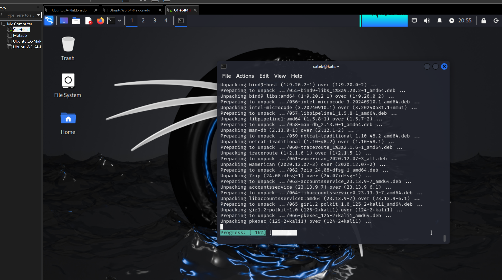
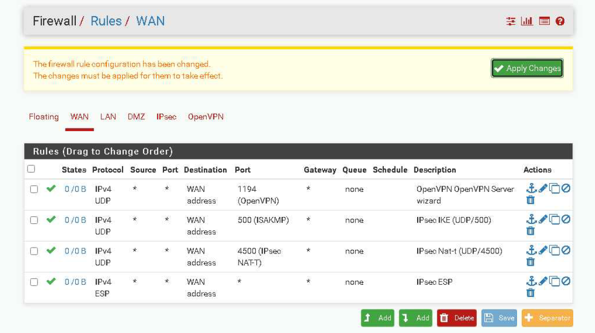
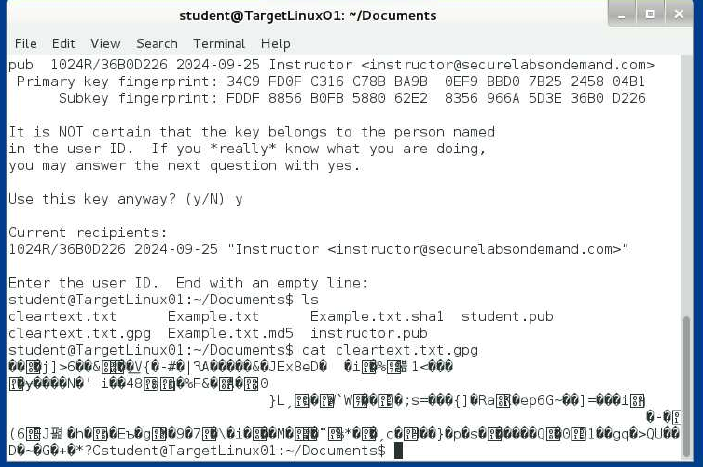

About Me
I am an aspiring cybersecurity professional with a deep interest for safeguarding digital environments and ensuring the integrity of critical systems. I pride myself on being loyal, trustworthy, and composed in a crisis, which enables me to approach challenges with confidence. My love for continuous learning drives me to stay updated on the latest trends and practices in cybersecurity. Having been involved in business since I was able to work at 16, I have spent years redefining and deepening my understanding of what a business truly is. This experience has fostered a problem-solving mindset that I want to apply in complex security issues, which would allow me to find innovative solutions while effectively communicating with diverse teams. I thrive in dynamic environments where teamwork and proactive decision-making are essential for identifying vulnerabilities, issues, and potential problems. My goal is to leverage my growing technical skills and interpersonal abilities to contribute to building secure, resilient systems and fostering a strong security culture within organizations.
Skills
Technical Skills
- Scripting Languages: Python, Bash, PowerShell
- Network Security & Vulnerability Assessment
- Cybersecurity Tools: Wireshark, Masscan, Metasploit
- System Troubleshooting in Windows & Linux environments
Additional Skills
- Microsoft Excel Certification
- Strong Communication Skills
- Attention to Detail
- Intermediate Spanish
Work Experience
As a Co-Manager at Sonic Drive-In, I have led daily operations in:
- Improving workforce efficiency by 136%
- handled inventory management, reducing discrepancies by 0.04%
- Developed effective scheduling to meet sales targets
- Resolved equipment issues during peak hours to ensure smooth operations
Education
The University of Texas at San Antonio
Bachelor of Business Administration in Cybersecurity
Expected Graduation: Dec 2025
Cumulative GPA: 3.88 | Major GPA: 4.0
Southwest Texas Junior College
Associate of Science, Magna Cum Laude
Associate of Art, Magna Cum Laude
Certifications
- McGrawHill Excel Blackbelt
- CompTIASecurity +
- ACI CmpTIA A+ Course Completion
Projects
Home Lab Setup
Description: Configured a home lab using virtual machines (VMs) for Kali Linux and Ubuntu. Conducted a simulated Nmap scan to assess network vulnerabilities and utilized Wireshark to analyze network traffic for insights into packet flow and potential security issues.
Technologies Used: Kali Linux, Ubuntu, Nmap, Wireshark
VPN Server Configuration
Description: Set up and configured a VPN server using pfSense to enhance network security and privacy. This project included configuring firewall rules and testing VPN connections for secure remote access.
Technologies Used: pfSense, VPN Protocols (e.g., OpenVPN)
Cryptographic Techniques Exploration
Description: Explored cryptographic techniques to ensure confidentiality, integrity, and authentication. Utilized hashing algorithms such as MD5 and SHA-1 to generate unique hash values (checksums) from text files, verifying data integrity. Implemented GNU Privacy Guard (GnuPG) for encryption, using both symmetric and asymmetric methods to secure communications between Linux user accounts.
Technologies Used: MD5, SHA-1, GnuPG
